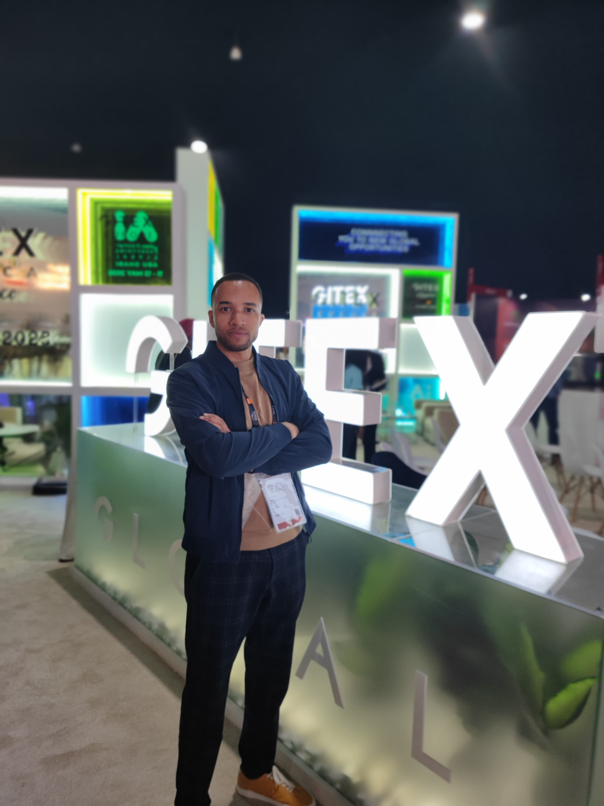
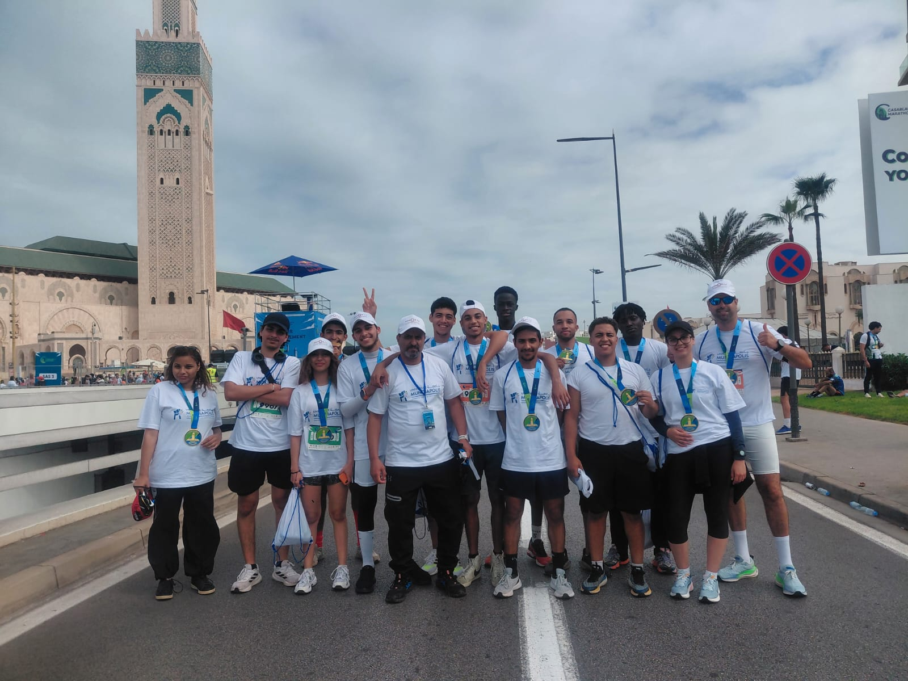
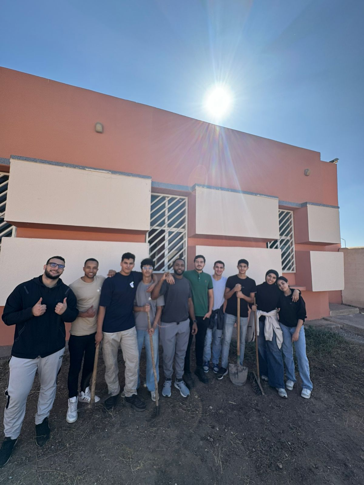
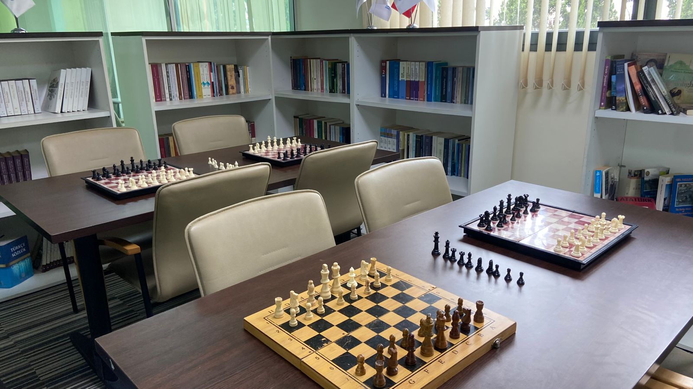
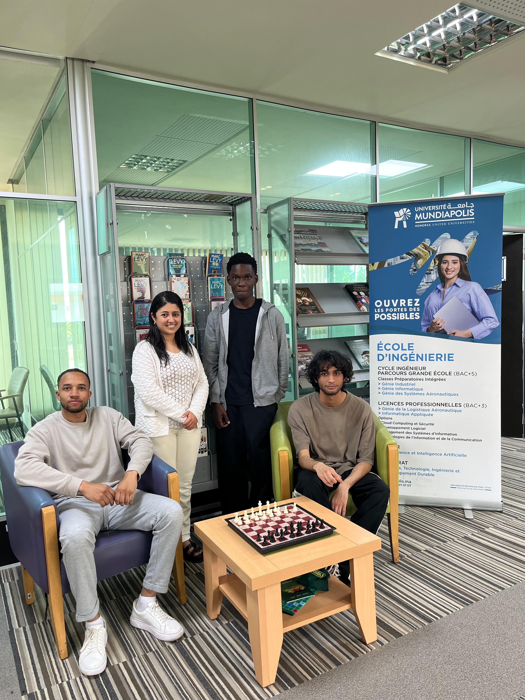

Vie Associative
Vie de Campus &
Vie de Campus &
Activités






En dernière année du cycle d'ingénieur en Cybersécurité à l'Université Mundiapolis, je recherche mon stage de fin d'études (PFE). Passionné par l'ingénierie des architectures résilientes, je dispose de bases solides en sécurité des API (OWASP, JWT), segmentation réseau hybride (VPN WireGuard, OPNsense) et conteneurisation Cloud (Docker, AWS).
En dernière année du cycle d'ingénieur en Cybersécurité à l'Université Mundiapolis, je recherche mon stage de fin d'études (PFE). Passionné par l'ingénierie des architectures résilientes, je dispose de bases solides en sécurité des API (OWASP, JWT), segmentation réseau hybride (VPN WireGuard, OPNsense) et conteneurisation Cloud (Docker, AWS).
Mon objectif : intégrer les exigences de sécurité au cœur du cycle de vie des applications et automatiser la posture de sécurité sur le Cloud et sur site.
Élève-Ingénieur Cybersécurité @ Mundiapolis
Casablanca, Maroc
Français (Courant) · Anglais (Intermédiaire) · Arabe (Natif)
Université Mundiapolis — Le campus de Nouaceur, Maroc
Dernière année (En cours) — Option : Sécurité et Gestion des Risques
Université Hassan II — Faculté des Sciences Ben M'sik, Casablanca
Électronique, Systèmes Embarqués et Télécommunications
Université Hassan II — Faculté des Sciences Ben M'sik, Casablanca
En sciences de la matière physique
Option Physique-Chimie, Casablanca
Conception Full Stack d'une plateforme d'apprentissage avec React et Next.js. Sécurisation de l'API backend (Laravel), gestion rigoureuse des accès et prévention des vulnérabilités courantes (XSS, SQLi, Rate Limiting). Intégration d'un moteur de recommandation IA (Python) aux flux de données sécurisés.
Développement d'un dashboard administratif web sécurisé (React, Next.js, TypeScript, authentification JWT). Ce portail consomme l'API RESTful d'une plateforme E-commerce (Python/Flask) en appliquant des règles d'autorisation strictes, alignées sur les recommandations de l'OWASP.
Sécurisation et cloisonnement réseau (WireGuard, Suricata), durcissement CIS/AD et conformité Cloud évalués par audits multi-niveaux (Lynis, BloodHound, Prowler).
Déploiement d'une solution SIEM Wazuh, détection basée sur la matrice MITRE ATT&CK et analyse forensique approfondie (disque et mémoire) post-compromission.
Conception et sécurisation d'une infrastructure réseau multi-DMZ avec OPNsense : segmentation en 4 zones, filtrage stateful, forçage proxy Squid et isolation inter-DMZ.
Supervision d'infrastructure hybride (Linux & Windows) conteneurisée sur AWS via Zabbix 7.0 et Docker. Alerting proactif pour haute disponibilité.
Implémentation d'une solution de contrôle d'accès réseau (NAC) avec PacketFence, intégration Active Directory et sécurisation des accès réseau via RADIUS (802.1X).
Plateforme bancaire numérique Full-Stack avec assistant IA (RAG) conversationnel et authentification sécurisée Spring Security JWT.
Application e-commerce complète développée en Python/Flask, gestion des produits, panier, authentification et conformité OWASP contre les vulnérabilités web.
Application desktop de gestion des ressources humaines développée en Java Swing/AWT avec base de données relationnelle MySQL et tests unitaires JUnit 5.
Moteur de recherche personnalisé avec fonctionnalités d'indexation, de classement et de traitement des requêtes en Flask et Python.
Application de gestion intelligente de stationnement conçue pour optimiser l'occupation des places et améliorer la mobilité urbaine.
Système de gestion complet pour un centre médical développé sur l'ERP Odoo 17 : dossiers patients, prise de rendez-vous et facturation.
Pipeline de nettoyage et d'optimisation de données pour modèles de Machine Learning — transformation des données brutes en jeux de données prêts pour l'entraînement.
Programme Professionnel Microsoft
En cours (2026)Huawei Certified ICT Associate — Cloud Computing
Janv. 2026Programme Cybersécurité IBM SkillsBuild
Janv. 2026Fondations Cloud — AWS Academy
Déc. 2025Cisco Networking Academy
2026Huawei Certified ICT Associate — Intelligence Artificielle
2026




Actuellement à la recherche d'un Stage de Fin d'Études (PFE) en Cybersécurité, Cloud et Architectures Hybrides. N'hésitez pas à me contacter !